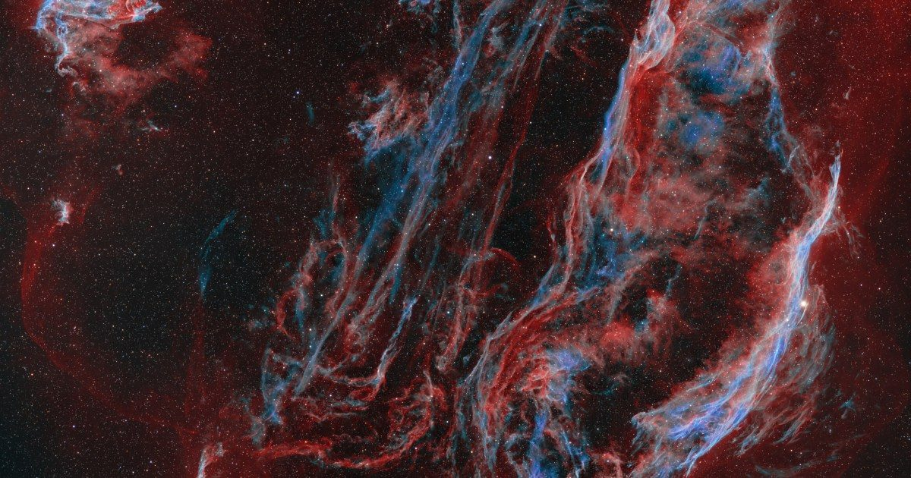

Брошенный за петлю
Ионут Неделку из Центрального Бедфордшира, Англия Петля Лебедя (Шарплесс 2-103), остаток сверхновой, самые яркие дуги которой образуют туманность Вуаль, находится на расстоянии около 2400 световых лет.
Его светящиеся нити отслеживают газ, нагретый взрывной волной массивной звезды, которая взорвалась примерно 10 000 лет назад.
Визуализатор выдержал 17 часов экспозиции в Hα/OIII/RGBПродолжить чтение «Брошено за петлю» Пост «Брошено за петлю» впервые появился на Astronomy Magazine.